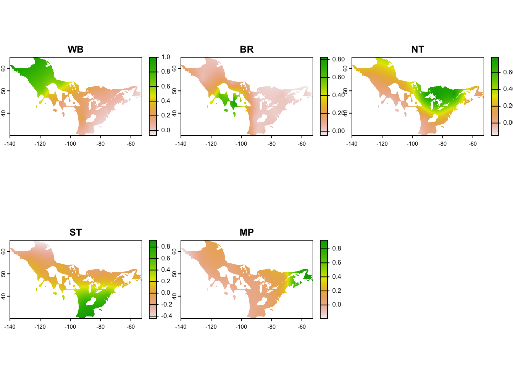

Chapter 7 Supplement: Avian abundance data and genetic breeding nodes
This supplementary section provides more detailed information outside the scope of mignette. Specifically, the code here goes into details of using avian abundance data and genetic populations from a genoscape.
7.1 Breeding nodes
Delineating breeding nodes is necessary for our migratory network model for both 1) assignment among populations, and 2) specifying a region for relative abundance. Here, we show how breeding nodes can be delineated by genetically distinct populations on the breeding grounds. In this example, we’ll show how to use eBird Status and Trends data to specify the breeding range and then use genetic data from admixture analyses to specify the spatial extent of the breeding nodes.
7.1.1 ebirdst
In our migratory network analyses, the eBird Status and Trends data is used to delineate the different stages of the annual cycle. Prior to doing anything with eBird Status and Trends data, you will need to download the ebirdst package, and then get access to the data. You will need to follow the most up-to-date instructions from the ebirdst developers for getting the abundance data. Currently, that information is here: https://ebird.github.io/ebirdst/
To download the package:
Then, get access to ebirdst data at https://ebird.org/st/request. You will receive a key to download ebirdst data and you can enter that key in R:
where "XXXXX" is the key.
By following instructions from the ebirdst developers, you can obtain polygons of the breeding and nonbreeding ranges of avian species (see https://ebird.github.io/ebirdst/ for details).
7.1.2 Creating the genoscape
A genoscape is the collection of genetically distinct populations that make up a species’ range (Ruegg et al. 2021). Typically, for migratory species, the genoscape describes this population structure on the breeding range because the nonbreeding populations can can contain individuals from different breeding populations.
We will outline the main genoscape creation steps here, but full instructions on creating a genoscape map can be found in Eric Anderson’s Github project Make a Bird Genoscape Project map. The input data needed for a genoscape are:
- Individual Q-value matrix
- Lat/lon matrix of individuals
- Breeding range polygon
The Q-value matrix is obtained from individual admixture analyses (e.g. Structure, Admixture, snmf fuction from the LEA R-package). Latitude/longitude coordinates are for the individual samples used in the Q-value matrix. Breeding range polygons can be obtained from ebirdst (see previous section).
The amre_breeding_data data set provides admixture results (Q-values) for five genetic clusters for American Redstart (DeSaix et al. 2023) and metadata for the sampled individuals.
library(mignette)
Q_matrix <- mignette::amre_breeding_data %>%
dplyr::select(WB, BR, NT, ST, MP) %>%
as.matrix()
coords <- mignette::amre_breeding_data %>%
dplyr::select(Lon, Lat) %>%
as.matrix()The larger data objects in mignette are stored in extdata:
breeding_range <- system.file("extdata", "amre_breeding_range.Rds", package = "mignette")
breeding_range <- terra::vect(breeding_range)
breeding_range_st <- sf::st_as_sf(breeding_range) # tess3Q_map_rasters function requires sf objects, not terraWe will also specify custom colors to correspond to the published genoscape.
cluster_colors <- c(
`ST` = "#e69f00", # orange/Southern Temperate
`BR` = "#cc79a7", # pink/Basin Rockies (BR)
`NT` = "#56b4e9", # light blue/Northern Temperate (NT)
`WB` = "#009e73", # green/Western Boreal (WB)
`MP` = "#7979ff" # dark blue/Maritime Provinces (MP)
) We will use a modified version of the tess3r package to create the genoscape rasters.
# remotes::install_github("eriqande/TESS3_encho_sen")
amre_genoscape <- tess3r::tess3Q_map_rasters(
x = Q_matrix,
coord = coords,
map.polygon = breeding_range_st,
window = sf::st_bbox(breeding_range_st),
resolution = c(300,300), # if you want more cells in your raster, set higher
col.palette = tess3r::CreatePalette(cluster_colors, length(cluster_colors)),
method = "map.max",
interpol = tess3r::FieldsKrigModel(10),
main = "Ancestry coefficients",
xlab = "Longitude",
ylab = "Latitude",
cex = .4
)
names(amre_genoscape) <- colnames(Q_matrix)
amre_genoscape <- terra::rast(amre_genoscape) # convert from rasterbrick to spatRaster
crs(amre_genoscape) <- "EPSG:4326" # Set CRS projectionCheck out the resulting genoscape:

STOP
The rasters for the genoscape are all that are needed for obtaining information on relative abundance for the different populations. You can continue on to the relative abundance chapter if you are ready to do that with the genoscape. Or if you still need to create the wintering nodes, check out the next chapter on wintering nodes. The following section is not necessary for the migratory network but details how to covert genoscape rasters to polygons if the mignette user is interested in doing so.
7.1.3 Genoscape polygons
Using the genoscape rasters we will convert them to polygons, using the handy scape_to_shape() function. The prob_threshold parameter specifies the value to determine if a raster cell is included in the polygon for that genoscape. This value should be customized for different species to check for overlap of genoscape polygons, which is not desirable. Setting too high of a threshold will create very small breeding nodes, while too low of a threshold will result in large, overlapping breeding nodes.
Check out the polygons
## Spherical geometry (s2) switched off